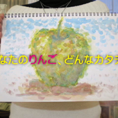
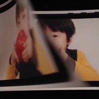

history
-

2009
Take a Look
AUGM大分 温泉りんごCM大賞
-
 2010
Take a Look
2010
Take a Look
九州ユーザーグループ対抗CM大賞
-
2011
Take a Look
九州沖縄ユーザーグループショートムービーフェスティバル
-
2012
Take a Look
九州沖縄ユーザーグループショートムービーフェスティバル 2012
-

2013
Take a Look
九州沖縄ユーザーグループショートムービーフェスティバル 2013
プログラム終了後、こちらへ速やかに結果を発表します。お楽しみに！